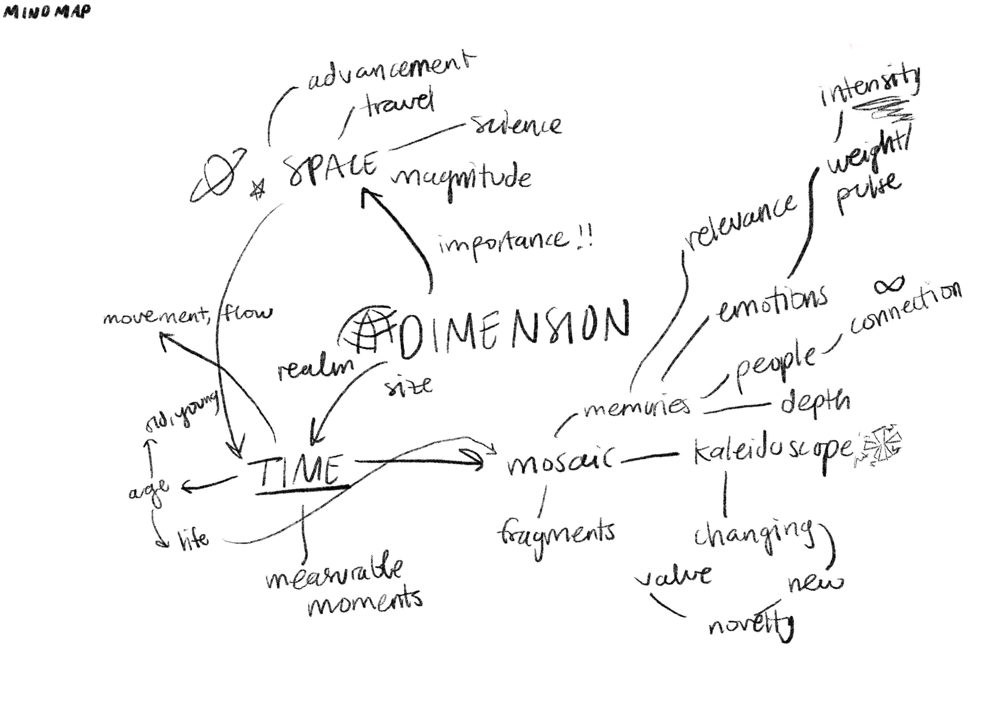

Definitions of Dimension
Dimension as a noun
• The action of measuring, measurement. Obsolete.
• Measurable or spatial extent of any kind, as length, breadth, thickness, area, volume; measurement, measure, magnitude, size. (Now commonly in plural: cf. proportions.) Also figurative. Magnitude, extent, degree (of an abstract thing).
• Extension in time, duration.
• A mode of linear measurement, magnitude, or extension, in a particular direction; usually as co-existing with similar measurements or extensions in other directions.
• Measurable form or frame; plural material parts, as of the human body; ‘proportions’. Obsolete.
Dimension as a verb
• To measure or space out; to reduce to measurement.
• To mark the dimensions on (a working drawing, diagram, or sketch). Chiefly in past participle and participial adjective.
Etymology
A borrowing from French, noun of action
Word Association / Mind Map
My 5Ds
1. Novelty: new, unknown moments
2. Resonance: the emotional weight a memory carries
3. Pulse: the intensity of a moment
4. Connection: people
5. Ambiguity: uncertainty of moments


Reflection
After sketching out my ideas, the word “dimension” brought to mind a kaleidoscope. When I think about kaleidoscopes, I’m evoked by a sense of awe in how each intricate piece inside helps form a unique and beautiful pattern to the eye. When the kaleidoscope is shifted, the components alter to create a new pattern, regardless of the pieces remaining the same. This phenomenon mimics the memories and characteristics that make up a person throughout their life. Some moments and relationships emerge more prominently and become more important, while others fade away with the passage of time. What makes people in our lives relevant, and what makes a memory important?
I explored these questions through novelty, resonance, pulse, connection, and ambiguity. These were the factors that I considered to be significant when considering the pieces that make up my memories and my life. This exercise significantly expanded my understanding of experience design by encouraging me to think in terms of dimensions of experience, connecting my personal observations to the perspective of my work. This showed me how different elements combine to create a meaningful, layered experience, which is what experience design is about. Developing a mind map enabled me to transform abstract concepts into visual representations and develop new methods for articulating intangible qualities. This project made me think about how experiences shape individuals, and how this is then applied to design, since everyone is made up of different experiences, and these divergent perspectives must be considered.